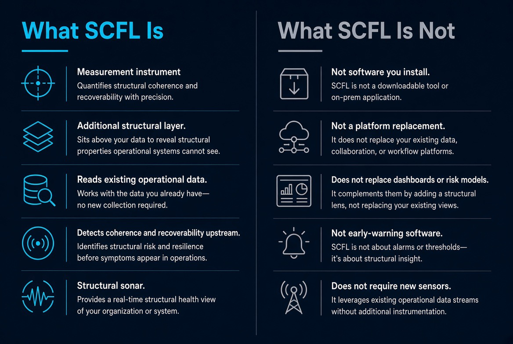

Existing gaps
Performance metrics describe output. By the time they move, the relationships underneath may already have sheared. The signal arrives after the structure has changed.
Independent Research Program
Do the relationships that hold a system together remain intact under stress — while conventional indicators still look fine?
"Coherence is the degree to which a system's relationships hold one another in place."
Measurement as a Service
Most organizations already generate continuous telemetry — metrics, logs, sensor streams, transaction flows, process data. They use it for performance monitoring, alerting after something has moved, and post-incident review.
SCFL is not simply a new lens for telemetry. It is a different way of characterizing the state of a system from the relationships expressed in its existing data. The reading asks whether those relationships remain intact while conventional indicators are still stationary.
This is not a new data-collection layer. It is an analytical characterization that sits downstream of the instrumentation you already run. No new agents, no change to your operational stack, no requirement to export sensitive systems into a new environment.
Eliminating the need for new instrumentation removes security, performance, and engineering hurdles. Procurement and technical review cycles shrink because nothing is being installed.
Historical telemetry already exists. A structural reading can begin on past data — including a zero-risk historical audit on 30–90 days of existing streams — without waiting to gather new observations.
SCFL does not compete with Datadog, Splunk, OpenTelemetry, or your existing monitoring stack. It characterizes relational and structural state from the signals those tools already surface.
The practical entry is the One Question Challenge: one well-formed structural question against the telemetry you already hold. If the signal is present, the reading continues. If it is not, the engagement stops — and that outcome is itself informative.
Overview
SCFL is an independent measurement program. It reads the relational structure of a system — whether the relationships that hold it together are still intact — rather than waiting for performance to degrade.
It sits upstream of conventional indicators. Performance metrics describe what a system is doing. SCFL asks whether the structure underneath that performance can still replenish itself.
The working claim is simple: coherence is measurable, and its loss is readable before outcomes move.

The Measurement Problem
Performance metrics describe output. By the time they move, the relationships underneath may already have sheared. The signal arrives after the structure has changed.
Relational breakdown precedes outcome breakdown. Measuring coherence opens a window while conventional indicators are still stationary — not as a prediction of failure, but as a reading of recoverability.
SCFL does not replace existing frameworks. It adds the relational layer those frameworks do not measure. The model can be right on the margin and still blind on whether the system can replenish itself.
Research Program
Coherence as a Relational Property: Toward a Foundational Science of Coherence
Ronald L. Brogdon
Available at:
10.5281/zenodo.23247214The program is building the measurement layer itself: definitions, operators, and domain plates. Current work centers on:
Potential Applications
Grid, hospitals, engineered structures. Seam shear and recoverability loss can be readable while output metrics remain inside tolerance.
Banks, firms, institutions. Confidence can hold a deposit base or a revenue line in place after the structural geometry has already crossed irreversibility.
Nuclear, seismic, and other sequential failures. The precursor geometry and the cascade into tail events are distinct readings.
A separate family. Souljourner addresses biological and interior plates. It is not the identity of the SCFL systems measurement program.
Foundational Research
The corpus is the working record: definitions, operator tests, and domain reconstructions. The questions the plates are built to answer:
Engagement is welcome from researchers, domain collaborators, and institutions that need the upstream layer. See the Cases and Videos for the public plates, or the One Question Challenge for a low-commitment entry. The Measurement Process Flow shows how telemetry becomes an as-of structural reading.
Contact
Research, collaboration, or a specific plate:
Email: measurement@coherencemanagement.org
Prefer a structured first step? The One Question Challenge is a low-commitment proof-of-concept.